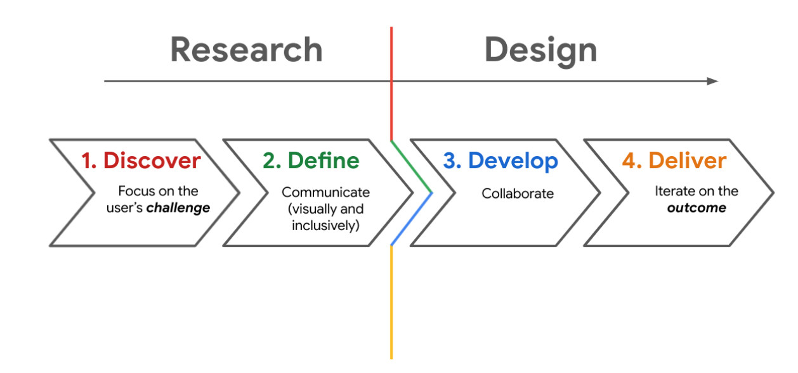
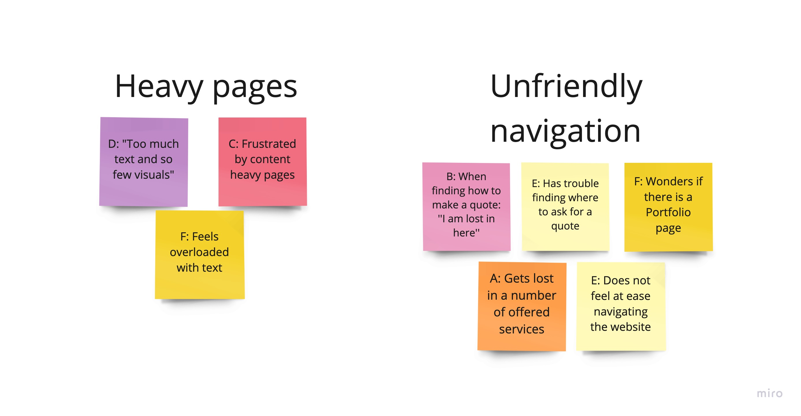

About the Project
Web Communications is a complete Digital Marketing Agency, "factory of ideas" that offers digital solutions for small, medium and large businesses.
The challenge
I am redesigning a website of a digital agency. I need to figure out what specific challenges users are facing while navigating a website, and how I can help fill those gaps and create an intuitive user interface.
My Role:
- UX Research
- User Flows
- Sketches
- UI Design & Interactive Prototyping
Project Duration: 7 - 15 January 2022.
The Design Framework: Double Diamond

For this project, I followed Double Diamond UX process, that focuses on users and their needs. Here are the key steps:
- Discover the problem: Gathering information about potential issues users are facing.
- Define the problem: Focusing on the main issue your product aims to solve.
- Develop solutions: Wire-framing and prototyping your product.
- Deliver the product: Reviewing and testing your product.
1. Discover the problem
1.1 Research
Research goal
Evaluate pain points customers are experiencing in using the website.
Research questions
- What can we learn from the steps that users take when browsing a website?
- Are there any parts where users are getting stuck?
- Does the website design is easy to use?
- Does the website have all the necessary information to help users make a decision whether they will work with the agency?
Key Performance Indicators (KPIs)
KPIs: Time on task, system usability scale (SUS), Net Promoter Score (NPS).
Methodology
-
Unmoderated usability study
-
Location: Italy, remote (each participant went through the usability study at home)
-
Date: Sessions will take place on January 7 & 8.
-
Six participants, each completing the study on their own.
-
Each session will last approx 45 minutes and will include an introduction, a list of tasks, and a short questionnaire.
Participants
-
Participants are people among Instagram followers of other competitive digital agency who are interested in web design; people who are looking for services of a digital agency.
-
Three males, three females between the ages of 25 and 55.
Intro questions:
-
What kind of city or town do you live in?
-
Are you interested in web design?
-
Have you ever used a digital agency/web agency service?
-
Are you thinking of making a new website or redesigning an existing one?
-
If so, what kind of website is it?
-
“I thought the website was easy to use”
-
“I found the design unnecessarily complex”
-
“I thought there was too much inconsistency with this app“
-
“I found the website very cumbersome to use“
-
“I enjoyed browsing the website.“
-
“I found the design a little messy“
- Based on the theme that: most users were unsure how to ask for a quote, an insight is: users need a more intuitive way to access 'Asking for a quote section''.
- Based on the theme that: the Portfolio page is difficult to find for some users, an insight is: users need an easy way to access the Portfolio section.
- Based on the theme that: almost all users feel overloaded with heavy text, an insight is: users need more structured information with less text content.
- Based on the theme that: some users do not feel at ease navigating through offered services, an insight is: users need a list of offered services to be structured and better divided into groups and subgroups.
- The process is everything. Even for small projects, thoughtful processes give a designer a roadmap to navigate through what seems unclear at first, especially when you’re starting out.
Questions:
Prompt 1: You’ve just come across this website while looking for a digital agency to make a website for your business. Could you describe your first impression?
Follow-up 1: How easy or difficult was this task to complete? Did you find anything confusing?
Prompt 2 : From the homepage, figure out where you would go to ask a service quote.
Follow-up 2: How did you feel about this task overall? Was it easy or challenging?
Prompt 3: On a scale of 0-10, how likely is it that you would recommend Web Communications to your friends, family or business associates?
Follow-up 3: How did you feel about this website overall? What did you like and dislike about it?
Prompt 4: Try to describe this experience in three words, and explain why you chose those words.
Follow-up 4: How easy or difficult was it to come up with three words?
System Usability Scale (SUS) questionnaire
Participants were asked to complete the System Usability Scale (SUS) by scoring each response with points, where the points' breakdown for the responses are:
Strongly Disagree: 1 point
Disagree: 2 points
Neutral: 3 points
Agree: 4 points
Strongly Agree: 5 points
2. Define
This part presents synthesized data obtained during the interview with stakeholders.
"What is the problem we are trying to solve? "Why would users want to use this solution?"
2.1 Gathering Data: Affinity Mapping
In order to gather observations during the user research I used an affinity diagram to organizes data into groups with common themes.
2.1.1 Developing Insights
3. Develop
Designing how users interact with a product is a key step in figuring out what are the features of the product and where the issues may be in task flows. The following charts demonstrate:
1. The user flows through the app.

4. Deliver.
Low-Fidelity prototypes
What have I learned from this project?
User-Centric Design
Placing the user at the center of the design process is crucial. By conducting thorough research, such as usability studies, we can gain valuable insights into user behavior and pain points. Understanding the needs and preferences of the target audience allows us to make informed design decisions that prioritize user satisfaction and engagement.
Simplicity and Ease of Use
Users value simplicity and ease of use. Overwhelming a website with excessive text or complex design elements can hinder users' ability to navigate and comprehend the content. It is important to present information in a clear and concise manner, making it easy for users to find what they need and accomplish their goals. Simplifying the user interface and reducing cognitive load greatly enhances the overall user experience.